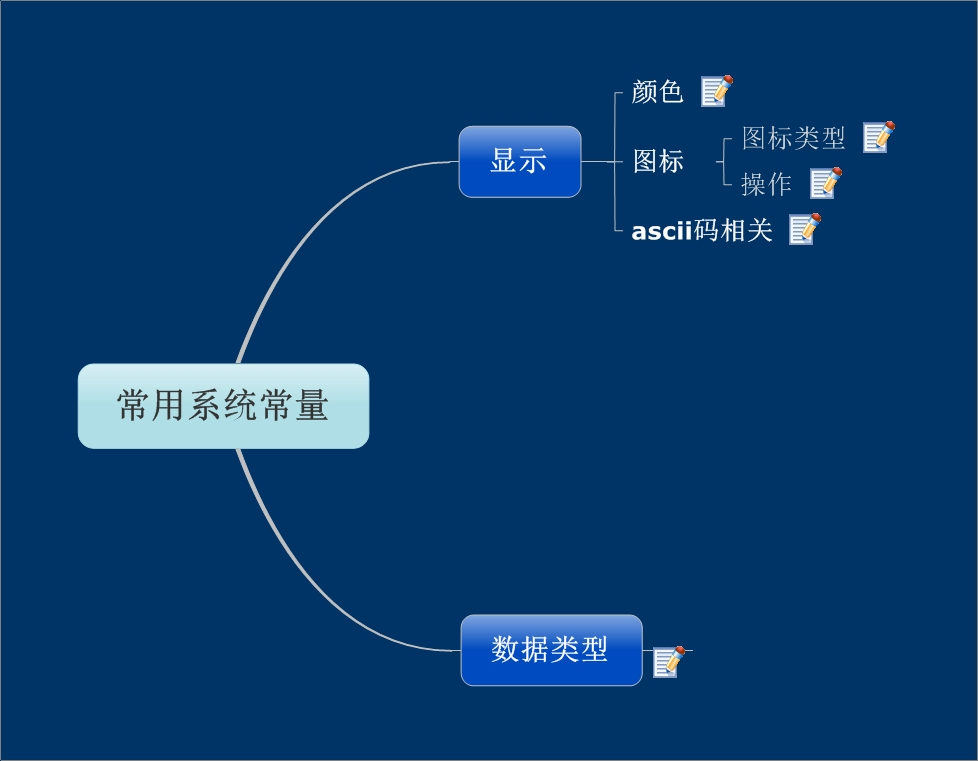

<div style="color:blue" align=center>用mindmanager总结的vb系统常量</div><br><div id="article_content" class="article_content tracking-ad" data-mod="popu_307" data-dsm="post">

<p><a href="http://www.kuaipan.cn/file/id_39320996825530413.html"></a>单击图片下载</p>
<p><a href="http://www.kuaipan.cn/file/id_39320996825530413.html"></a><br>
</p>
   
</div><div class="ArcitleLink"><a href='http://blog.csdn.net/xvshu/article/details/7230759'>原文链接</a>